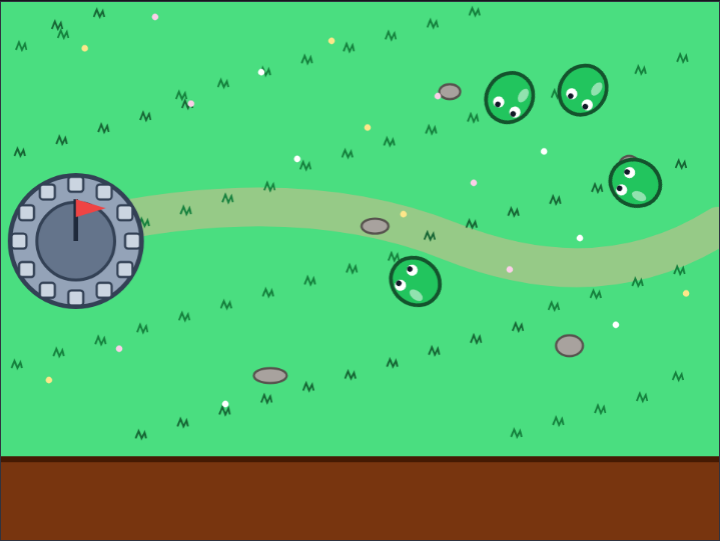
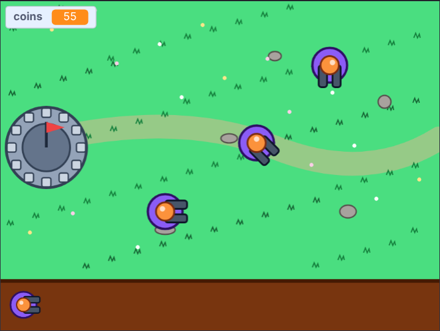
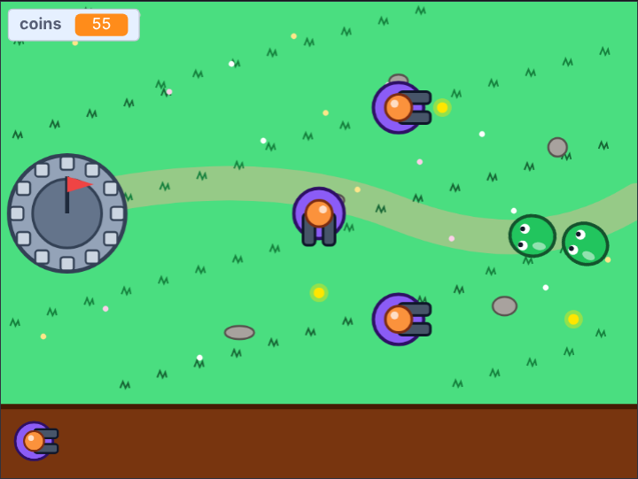
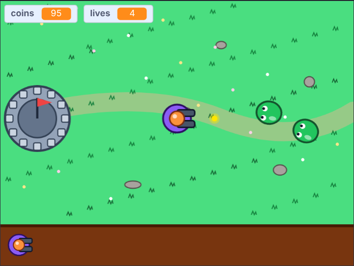
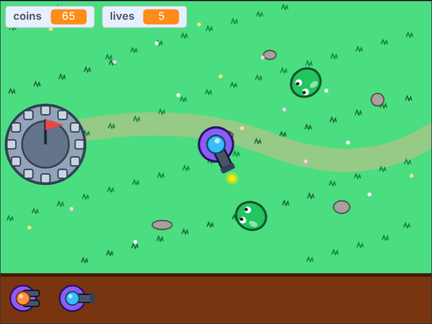
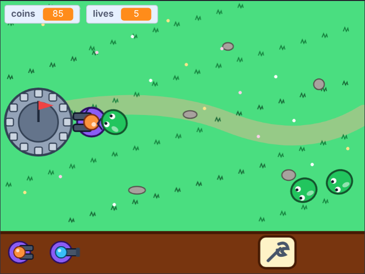
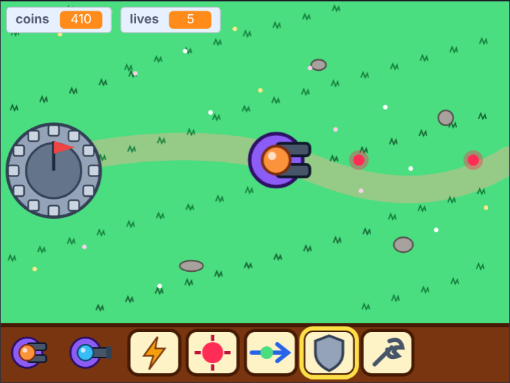
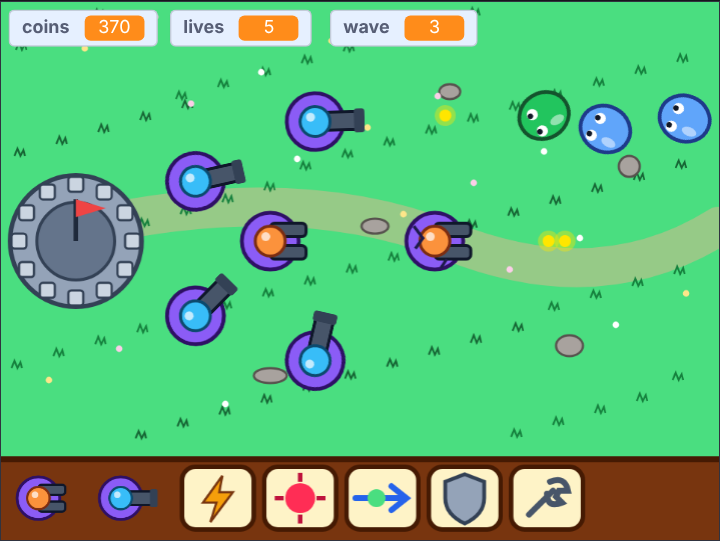

<title>Slime Siege Tutorial</title>
<meta name="claude:viewport-fit-sides" content="cover">
<link rel="preconnect" href="https://fonts.googleapis.com">
<link rel="stylesheet" href="https://fonts.googleapis.com/css2?family=Fredoka:wght@500;600&family=Atkinson+Hyperlegible:ital,wght@0,400;0,700;1,400&family=JetBrains+Mono:wght@400&display=swap">
<style>
/* Layout: one reading column; each step is a numbered section: the big idea, the blocks, a picture and a checkpoint file. */
:root {
  --bg: #f4f3fa; --surface: #ffffff; --fg: #1f1d33; --muted: #5c5a74; --line: #dddbea;
  --accent: #3b3f9e; --accent-soft: #e6e6fa; --drone: #d97706; --code-bg: #f8f7fd;
  --display: "Fredoka", "Trebuchet MS", system-ui, sans-serif;
  --body: "Atkinson Hyperlegible", "Segoe UI", system-ui, sans-serif;
  --mono: "JetBrains Mono", ui-monospace, Consolas, monospace;
}
@media (prefers-color-scheme: dark) { :root:not([data-theme="light"]) {
  --bg: #13121f; --surface: #1c1a2c; --fg: #ebe9f7; --muted: #a6a3bf; --line: #312e47;
  --accent: #a5a8ff; --accent-soft: #23244a; --drone: #fbbf24; --code-bg: #232036; color-scheme: dark; } }
:root[data-theme="dark"] {
  --bg: #13121f; --surface: #1c1a2c; --fg: #ebe9f7; --muted: #a6a3bf; --line: #312e47;
  --accent: #a5a8ff; --accent-soft: #23244a; --drone: #fbbf24; --code-bg: #232036; color-scheme: dark; }

body { background: var(--bg); color: var(--fg); font: 18px/1.6 var(--body);
  padding-left: max(16px, env(safe-area-inset-left, 0px)); padding-right: max(16px, env(safe-area-inset-right, 0px)); padding-block: 40px 72px; }
main { max-width: 760px; margin: 0 auto; display: grid; gap: 48px; }
main > *, .step > *, .stack > *, .intro > * { min-width: 0; }
h1, h2, h3 { font-family: var(--display); font-weight: 600; text-wrap: balance; margin: 0; line-height: 1.15; }
h1 { font-size: clamp(2rem, 6vw, 2.9rem); }
h2 { font-size: 1.7rem; }
h3 { font-size: 1.15rem; font-weight: 500; }
p { margin: 0; max-width: 66ch; }
a { color: var(--accent); }
code { font: 0.88em var(--mono); background: var(--code-bg); padding: 1px 5px; border-radius: 4px; overflow-wrap: anywhere; }
.eyebrow { font: 600 0.78rem var(--body); letter-spacing: 0.08em; text-transform: uppercase; color: var(--drone); }
.stack { display: grid; gap: 16px; min-width: 0; }
.intro { display: grid; gap: 14px; }
.intro p { color: var(--muted); font-size: 1.08rem; }

.plan { list-style: none; margin: 0; padding: 0; display: grid; gap: 6px; counter-reset: plan; }
.plan li { display: flex; flex-wrap: wrap; align-items: baseline; gap: 4px 12px; padding: 8px 12px; border-radius: 6px; counter-increment: plan; }
.plan li::before { content: counter(plan); font: 600 0.95rem var(--display); color: var(--muted); width: 1.4em; }
.plan .name { font-weight: 700; }
.plan a { text-decoration: none; }
.plan a:hover .name, .plan a:focus-visible .name { text-decoration: underline; }
.plan .what { color: var(--muted); flex: 1 1 220px; }

.step { display: grid; gap: 20px; border-top: 2px solid var(--line); padding-top: 32px; }
.step-head { display: flex; align-items: center; gap: 14px; }
.num { flex: none; width: 44px; height: 44px; border-radius: 50%; display: grid; place-items: center;
  background: var(--accent); color: var(--surface); font: 600 1.3rem var(--display); }
ol.do { margin: 0; padding-left: 1.3em; display: grid; gap: 8px; max-width: 66ch; }

.blocks-panel { background: var(--surface); border: 1px solid var(--line); border-radius: 8px; padding: 16px; overflow-x: auto; }
.blocks-panel .label { font: 700 0.78rem var(--body); letter-spacing: 0.06em; text-transform: uppercase; color: var(--muted); margin-bottom: 8px; }
pre.blocks { margin: 0; font: 13px var(--mono); white-space: pre; }

.note { border-left: 3px solid var(--drone); padding: 2px 0 2px 14px; color: var(--fg); }
.note b { color: var(--drone); }
figure { margin: 0; display: grid; gap: 8px; }
figure img { width: 100%; border-radius: 8px; border: 1px solid var(--line); display: block; }
figcaption { font-size: 0.9rem; color: var(--muted); }

.table-wrap { overflow-x: auto; }
table { border-collapse: collapse; font-variant-numeric: tabular-nums; min-width: 420px; }
th, td { text-align: right; padding: 6px 14px; border-bottom: 1px solid var(--line); }
th:first-child, td:first-child { text-align: left; }
th { font-size: 0.82rem; color: var(--muted); font-weight: 700; }

.checkpoint { display: flex; flex-wrap: wrap; align-items: center; gap: 10px 16px; background: var(--surface);
  border: 1px solid var(--line); border-radius: 8px; padding: 12px 16px; }
.checkpoint p { flex: 1 1 260px; color: var(--muted); font-size: 0.95rem; }
.btn { display: inline-block; font-weight: 700; text-decoration: none; color: var(--surface); background: var(--accent);
  padding: 8px 16px; border-radius: 6px; white-space: nowrap; }
.btn:hover, .btn:focus-visible { outline: 3px solid var(--accent-soft); outline-offset: 1px; }
.try { margin: 0; padding-left: 1.3em; display: grid; gap: 6px; }
svg.coords text { font: 11px var(--body); fill: var(--muted); }
.scripts { display: flex; flex-wrap: wrap; gap: 12px; align-items: flex-start; }
.scripts .blocks-panel { flex: 0 1 auto; max-width: 100%; min-width: 0; }
.tag { font-size: 0.7rem; font-weight: 700; letter-spacing: 0.04em; padding: 1px 7px; border-radius: 999px; margin-left: 6px; }
.tag.new { background: var(--accent); color: var(--surface); }
.tag.changed { border: 1px solid var(--drone); color: var(--drone); }
.flow { list-style: none; margin: 0; padding: 0; display: flex; flex-wrap: wrap; gap: 8px; counter-reset: none; }
.flow li { display: grid; gap: 2px; padding: 10px 14px; border-radius: 8px; background: var(--surface); border: 1px solid var(--line);
  flex: 1 1 130px; min-width: 0; position: relative; }
.flow li b { font: 600 1.05rem var(--display); color: var(--accent); }
.flow li span { font-size: 0.85rem; color: var(--muted); }
footer { color: var(--muted); font-size: 0.92rem; border-top: 2px solid var(--line); padding-top: 24px; }
.idea { background: var(--accent-soft); border-radius: 8px; padding: 12px 16px; display: grid; gap: 4px; max-width: 66ch; }
.make { display: grid; gap: 4px; max-width: 66ch; font-size: 0.95rem; }
.make b { color: var(--drone); }
.idea b { font: 600 1rem var(--display); color: var(--accent); }
</style>

<main>
  <header class="intro">
    <span class="eyebrow">Scratch tutorial for kids (9+) · 8 steps · basic blocks only</span>
    <h1>Slime Siege</h1>
    <p>Slimes are zigzagging across the meadow towards your keep! Drag cannons anywhere you like: fixed cannons shoot the way you point them, and seeker cannons aim at the slime in front. Destroyed slimes give coins for more cannons, repairs and upgrades: faster shooting, stronger bolts, bolts that fly through, and sturdier cannons.</p>
    <p>Every step is a game you can play, and every step has a file you can download if you get stuck. You need the Scratch editor: <a href="https://scratch.mit.edu/projects/editor/">scratch.mit.edu/projects/editor</a>.</p>
    <div class="checkpoint">
      <p>Start here: the starter project has the keep, the slimes, the cannons, the target, the tools and the meadow. No code yet.</p>
      <a class="btn" href="https://github.com/AJosephsen/MyTemporaryJunk/raw/main/scratch/tutorials/slime-siege/starter.sb3">Download starter.sb3</a>
    </div>
  </header>

  <section class="stack" aria-label="Steps">
    <h3>The steps</h3>
    <ol class="plan">
      <li><a href="#step-1"><span class="name">Slimes</span></a><span class="what">Point towards, then wiggle</span></li>
      <li><a href="#step-2"><span class="name">Cannons</span></a><span class="what">Drag anywhere, click to turn</span></li>
      <li><a href="#step-3"><span class="name">Shooting</span></a><span class="what">Bolts are clones of their cannon</span></li>
      <li><a href="#step-4"><span class="name">Hits and coins</span></a><span class="what">Touching a colour</span></li>
      <li><a href="#step-5"><span class="name">The seeker</span></a><span class="what">Who is in front?</span></li>
      <li><a href="#step-6"><span class="name">Chewing and repair</span></a><span class="what">Each clone keeps its own health</span></li>
      <li><a href="#step-7"><span class="name">Upgrades</span></a><span class="what">A tool, then a cannon</span></li>
      <li><a href="#step-8"><span class="name">Waves</span></a><span class="what">One number makes it harder</span></li>
    </ol>
  </section>

  <section class="step" id="step-1">
    <div class="step-head"><span class="num">1</span><h2>Slimes</h2></div>
    <div class="idea"><b>Big idea: point towards, then wiggle</b><span>The Slime sprite hides and, every few seconds, makes a <b>clone</b> at a random place on the right edge. Each clone heads for the keep: <b>point towards Keep</b>, then <b>turn</b> a little left or right, then <b>move</b>. The turn comes from a wave, <b>40 × sin(timer × 200)</b>, so the slimes zigzag.</span></div>
    <p class="make"><span><b>Make:</b> <code>speed</code> and <code>wiggle</code> for the Slime only. The starter already has the Keep, Slime, Tower, Target, Tool and Ring sprites and the meadow.</span></p>
    <!--changed:1-->
    <ul class="do">
      <li>Each slime starts its wave at a different point (<b>wiggle</b> is random), so they don't all zigzag together.</li>
      <li>Try a bigger number than 40: how wild can they zigzag?</li>
    </ul>
    <figure>
      
      <figcaption>Slimes on their way to the keep.</figcaption>
    </figure>
    <div class="checkpoint">
      <p>Stuck? This is the project at the end of step 1.</p>
      <a class="btn" href="https://github.com/AJosephsen/MyTemporaryJunk/raw/main/scratch/tutorials/slime-siege/step1.sb3">Download step1.sb3</a>
    </div>
  </section>
  <section class="step" id="step-2">
    <div class="step-head"><span class="num">2</span><h2>Cannons</h2></div>
    <div class="idea"><b>Big idea: drag anywhere, click to turn</b><span>Click the cannon in the shop and a new one appears under your mouse. Its clone script says <b>repeat until not mouse down: go to mouse-pointer</b>: it follows you until you let go, wherever you like on the meadow. Click a placed cannon and it <b>turns 45°</b>: this is the <b>fixed cannon</b>, and you decide where it points.</span></div>
    <p class="make"><span><b>Make:</b> the variable <code>coins</code>, and <code>role</code>, <code>kind</code>, <code>price</code>, <code>hp</code>, <code>maxhp</code>, <code>delay</code>, <code>power</code>, <code>pierce</code> and <code>locked</code> for this sprite only.</span></p>
    <!--changed:2-->
    <ul class="do">
      <li>Let go on the toolbar, on another cannon or on the keep, and the new cannon goes back: it is deleted before you pay.</li>
      <li>A fixed cannon costs 15 coins.</li>
    </ul>
    <figure>
      
      <figcaption>Place cannons and turn them.</figcaption>
    </figure>
    <div class="checkpoint">
      <p>Stuck? This is the project at the end of step 2.</p>
      <a class="btn" href="https://github.com/AJosephsen/MyTemporaryJunk/raw/main/scratch/tutorials/slime-siege/step2.sb3">Download step2.sb3</a>
    </div>
  </section>
  <section class="step" id="step-3">
    <div class="step-head"><span class="num">3</span><h2>Shooting</h2></div>
    <div class="idea"><b>Big idea: bolts are clones of their cannon</b><span>Every 0.7 seconds the cannon becomes a bolt for a moment and makes a clone of itself, then turns back into a cannon. The clone starts where the cannon is and points the same way, so it flies off in the cannon's direction.</span></div>
    <p class="make"><span><b>Make:</b> nothing new.</span></p>
    <!--changed:3-->
    <ul class="do">
      <li>A fixed cannon always shoots, whether there is a slime or not: point it where the slimes will come.</li>
      <li>The bolt moves 24 steps first, so it starts at the end of the barrel.</li>
    </ul>
    <figure>
      
      <figcaption>Bolts fly the way the cannon points.</figcaption>
    </figure>
    <div class="checkpoint">
      <p>Stuck? This is the project at the end of step 3.</p>
      <a class="btn" href="https://github.com/AJosephsen/MyTemporaryJunk/raw/main/scratch/tutorials/slime-siege/step3.sb3">Download step3.sb3</a>
    </div>
  </section>
  <section class="step" id="step-4">
    <div class="step-head"><span class="num">4</span><h2>Hits and coins</h2></div>
    <div class="idea"><b>Big idea: touching a colour</b><span>A slime touching the bolts' bright yellow loses health, and at 0 you get 10 coins. A slime that reaches the keep costs one of your 5 lives.</span></div>
    <p class="make"><span><b>Make:</b> the variable <code>lives</code>, and <code>health</code> and <code>ouch</code> for the Slime only.</span></p>
    <!--changed:4-->
    <ul class="do">
      <li>A bolt stops at the first slime, and waits a moment so the slime notices it.</li>
      <li><b>ouch</b> is a short wait, so one bolt only counts once.</li>
    </ul>
    <figure>
      
      <figcaption>Hit the slimes before they reach the keep.</figcaption>
    </figure>
    <div class="checkpoint">
      <p>Stuck? This is the project at the end of step 4.</p>
      <a class="btn" href="https://github.com/AJosephsen/MyTemporaryJunk/raw/main/scratch/tutorials/slime-siege/step4.sb3">Download step4.sb3</a>
    </div>
  </section>
  <section class="step" id="step-5">
    <div class="step-head"><span class="num">5</span><h2>The seeker</h2></div>
    <div class="idea"><b>Big idea: who is in front?</b><span>The <b>seeker cannon</b> (35 coins) aims by itself, at the slime closest to the keep. Every frame, each slime checks: is my <b>distance to Keep</b> smaller than <b>nextD</b>? If so it writes its distance and position there. The hidden <b>Target</b> sprite then goes to that position and sets <b>nextD</b> back to 9999 for the next frame. A seeker just says <b>point towards Target</b>, and shoots when Target is within range.</span></div>
    <p class="make"><span><b>Make:</b> the sprite <b>Target</b> is already there. Make the variables <code>nextD</code>, <code>nextX</code>, <code>nextY</code> and <code>front</code>.</span></p>
    <!--changed:5-->
    <ul class="do">
      <li><b>front</b> is 1 while there is a slime at all; with no slimes the seeker waits.</li>
      <li>The shop makes a clone of itself for the seeker, with its own <b>kind</b> and <b>price</b>.</li>
    </ul>
    <figure>
      
      <figcaption>The seeker always aims at the slime in front.</figcaption>
    </figure>
    <div class="checkpoint">
      <p>Stuck? This is the project at the end of step 5.</p>
      <a class="btn" href="https://github.com/AJosephsen/MyTemporaryJunk/raw/main/scratch/tutorials/slime-siege/step5.sb3">Download step5.sb3</a>
    </div>
  </section>
  <section class="step" id="step-6">
    <div class="step-head"><span class="num">6</span><h2>Chewing and repair</h2></div>
    <div class="idea"><b>Big idea: each clone keeps its own health</b><span>A slime that bumps into a cannon's purple base stops and chews (<b>touching color</b>). The cannon checks <b>touching Slime</b> and loses health while it is being chewed. Below half it cracks, and at 0 it is gone. Pick the <b>Repair</b> tool and click a cannon to mend it for 10 coins.</span></div>
    <p class="make"><span><b>Make:</b> the variable <code>tool</code>.</span></p>
    <!--changed:6-->
    <ul class="do">
      <li>Every cannon has its own <b>hp</b>: it is a variable <b>for this sprite only</b>, so each clone has its own copy.</li>
      <li>With a tool picked, a click uses the tool; with no tool, a click turns a fixed cannon.</li>
    </ul>
    <figure>
      
      <figcaption>Repair a chewed cannon.</figcaption>
    </figure>
    <div class="checkpoint">
      <p>Stuck? This is the project at the end of step 6.</p>
      <a class="btn" href="https://github.com/AJosephsen/MyTemporaryJunk/raw/main/scratch/tutorials/slime-siege/step6.sb3">Download step6.sb3</a>
    </div>
  </section>
  <section class="step" id="step-7">
    <div class="step-head"><span class="num">7</span><h2>Upgrades</h2></div>
    <div class="idea"><b>Big idea: a tool, then a cannon</b><span>Four more tools: <b>Speed</b> (shoots twice as often), <b>Damage</b> (red bolts that take 2 health), <b>Pierce</b> (bolts fly through slimes) and <b>Strength</b> (double health). Pick a tool, then click a cannon: only that cannon gets the upgrade.</span></div>
    <p class="make"><span><b>Make:</b> nothing new: the upgrades change the cannon's own variables.</span></p>
    <!--changed:7-->
    <ul class="do">
      <li>The bolts are clones of their cannon, so they copy its <b>power</b> and <b>pierce</b>.</li>
      <li>Each upgrade makes the cannon a little bigger, so you can see which ones are upgraded.</li>
    </ul>
    <figure>
      
      <figcaption>Upgrade your best cannons.</figcaption>
    </figure>
    <div class="checkpoint">
      <p>Stuck? This is the project at the end of step 7.</p>
      <a class="btn" href="https://github.com/AJosephsen/MyTemporaryJunk/raw/main/scratch/tutorials/slime-siege/step7.sb3">Download step7.sb3</a>
    </div>
  </section>
  <section class="step" id="step-8">
    <div class="step-head"><span class="num">8</span><h2>Waves</h2></div>
    <div class="idea"><b>Big idea: one number makes it harder</b><span>After every 8 slimes the <b>wave</b> goes up: more health, faster, new colours. From wave 3 they also come from the top and the bottom, and every fifth wave starts with a big boss slime.</span></div>
    <p class="make"><span><b>Make:</b> the variable <code>wave</code>.</span></p>
    <!--changed:8-->
    <ul class="do">
      <li>This is the whole game. How many waves can you hold?</li>
      <li>Fixed cannons are cheap: a row of them pointing the right way is a strong wall of bolts.</li>
    </ul>
    <figure>
      
      <figcaption>Hold the keep!</figcaption>
    </figure>
    <div class="checkpoint">
      <p>Stuck? This is the project at the end of step 8.</p>
      <a class="btn" href="https://github.com/AJosephsen/MyTemporaryJunk/raw/main/scratch/tutorials/slime-siege/step8.sb3">Download step8.sb3</a>
    </div>
  </section>

  <section class="stack">
    <h3>Make it your own</h3>
    <ul class="try">
      <li>A Range upgrade for the seeker: a bigger distance before it shoots.</li>
      <li>A wall: a cheap cannon that does not shoot but has lots of health, to slow the slimes down.</li>
      <li>Selling: a Sell tool that removes a cannon and gives back half its price.</li>
      <li>Fast slimes that are weak, and slow slimes that are strong.</li>
    </ul>
  </section>

  <footer>Made with the Scratch workbench in this repository. The blocks on this page are drawn from the real project files, so they always match the downloads; the last step is the finished game.</footer>
</main>

<script src="https://cdn.jsdelivr.net/npm/scratchblocks@3.6.4/build/scratchblocks.min.js"></script>
<script>
  scratchblocks.renderMatching("pre.blocks", { style: "scratch3", languages: ["en"], scale: 0.75 });
</script>
